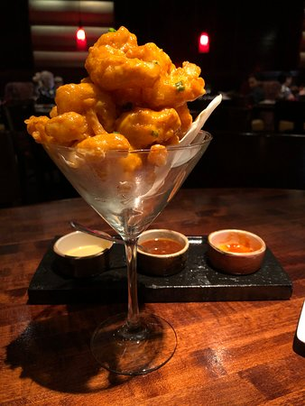

Dynmaite Shrimp

Description
Dynamite shrimp is a delicious and flavorful appetizer that combines the crispiness of deep-fried shrimp with a creamy, spicy sauce. This dish is inspired by Asian cuisine and can be found in many restaurants, particularly Japanese and fusion establishments. The tender shrimp are coated in a light tempura batter and fried to golden perfection before being tossed in a rich and spicy dynamite sauce. The combination of textures and flavors creates an irresistible dish that will leave you wanting more.
Ingredients
- 1 lb large shrimp, peeled and deveined (tail-on)
- 1 cup tempura batter mix
- 1 cup ice-cold water
- 1/2 cup all-purpose flour (for dusting)
- Oil for deep frying (canola, vegetable, or peanut oil)
For Dynamite sauce
- 1/2 cup mayonnaise
- 2 tablespoons Sriracha sauce
- 1 tablespoon honey
- 1 teaspoon rice vinegar
- 1/2 teaspoon sesame oil
- 1/2 teaspoon garlic powder
- 1/4 teaspoon salt (or to taste)
For Garnish
- Green onions, thinly sliced
- Toasted sesame seeds
Steps
- Prepare the dynamite sauce by combining the mayonnaise, Sriracha sauce, honey, rice vinegar, sesame oil, garlic powder, and salt in a medium-sized bowl. Mix well and adjust the seasoning to taste. Set aside.
- In a separate bowl, combine the tempura batter mix and ice-cold water. Stir gently until combined, but do not overmix. The batter should be slightly lumpy.
- Preheat the oil for deep frying in a large, heavy-bottomed pot or deep fryer to 350°F (175°C). Ensure there is enough oil to submerge the shrimp completely.
- Pat the shrimp dry with a paper towel and lightly coat them in the all-purpose flour, shaking off any excess.
- Dip each floured shrimp into the tempura batter, letting any excess batter drip off.
- Carefully lower the battered shrimp into the hot oil, frying in batches to avoid overcrowding. Fry for 2-3 minutes or until the shrimp are golden brown and cooked through. Use a slotted spoon to remove the shrimp from the oil and transfer them to a paper towel-lined plate to drain.
- Once all the shrimp are fried, place them in a large bowl and pour the dynamite sauce over them. Gently toss the shrimp to coat them evenly with the sauce.
- Transfer the dynamite shrimp to a serving platter and garnish with sliced green onions and toasted sesame seeds. Serve immediately and enjoy!